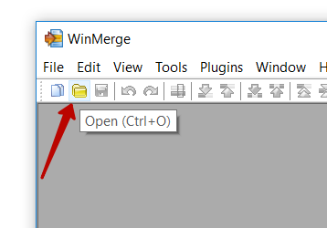
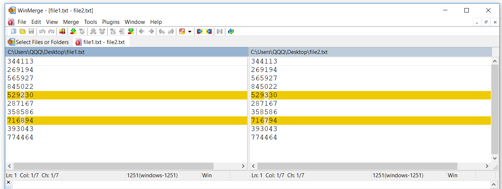

Особенности операций целочисленного деления и взятия остатка при работе с отрицательными числами
Когда речь идёт о положительных числах то с операциями целочисленного деления и взятия остатка все довольно просто. Результат всегда положителен и удовлетворяет уравнению
[latex]div[/latex] - целочисленное деление [latex]mod[/latex] - остаток от деления [latex]r = (r\ div\ d) * d + (r\ mod\ d)[/latex]
Если же делимое или делитель отрицательные то общая формула остается верной, но результаты отдельных операторов уже отличаются в зависимости от языка программирования.
Возможны два варианта:
- знак остатка совпадает со знаком делимого
- знак остатка совпадает со знаком делителя
При этом чтобы вышеприведенная формула всегда оставалась верна то изменяется и работа оператора целочисленного деления. Аналогично два варианта:
- результат округляется к 0
- результат округляется к -бесконечности
Delphi
Рассмотрим пример на Delphi, сначала остаток
Writeln('mod');
Writeln('-7 mod 3 = ', -7 mod 3); // -1
Writeln('-7 mod -3 = ', -7 mod -3); // -1
Writeln('7 mod -3 = ', 7 mod -3); // 1

Знак остатка всегда равен знаку делимого. Теперь целочисленное деление
Writeln('');
Writeln('div');
Writeln('-7 div 3 = ', -7 div 3); // -2
Writeln('7 div -3 = ', 7 div -3); // -2
Writeln('-7 div -3 = ', -7 div -3); // 2
Знак как и при обычном делении - отрицательный только если аргументы имеют разный знак. Округление в сторону 0.
Пример такого округления -7 делим на 3, получаем -2 1/3. Можно округлить до -3 или до -2. -2 ближе к нулю, поэтому округляем до -2. Так как -2 * 3 = -6, то остаток должен быть равен -7 - (-6) = -1
При таком варианте результаты операций по модулю аналогичны результатам которые получаются когда все операнды положительные.
Python
Рассмотрим пример на Python
print('-7 % 3 =', -7 % 3) # 2 print('-7 % -3 =', -7 % -3) # -1 print('7 % -3 =', 7 % -3) # -2

Знак остатка всегда равен знаку делителя. Причем в разных ситуациях результат отличается еще и по модулю.
print() print('-7 // 3 =', -7 // 3) # -3 print('-7 // -3 =', -7 // -3) # 2 print('7 // -3 =', 7 // -3) # -3
Знак как и при обычном делании - отрицательный только если аргументы имеют разный знак. Округление в сторону -бесконечности. Пример такого округления 7 делим на -3, получаем -2 1/3. Можно округлить до -3 или до -2. -3 ближе к -бесконечности, поэтому округляем до -3.
Так как -3 * -3 = 9, то остаток должен быть равен 7 - 9 = -2